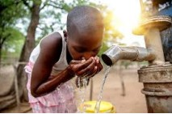
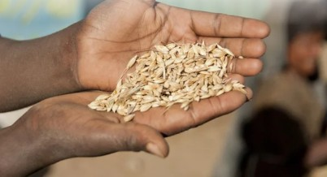
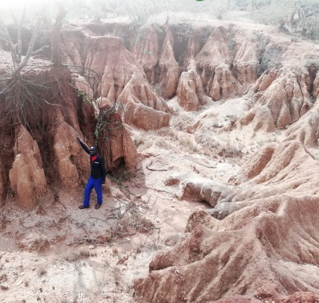
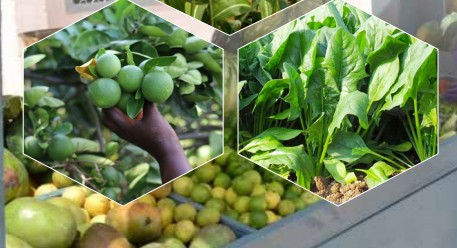

We carry out our mission through various ministries that focus on spiritual growth, outreach, discipleship, and community transformation.
Sharing the Gospel and reaching out to communities through crusades, missions, and evangelistic programs.
Addressing climate change impacts through forestry, agriculture, water management, and sustainable livestock practices.

Carrying out community training on climate change adaptation and mitigation strategies.

Establishing drought-resistant trees and fruit trees in drylands to combat desertification.

Establishing tree nurseries to increase the provision of seedlings for reforestation.

Protection of water catchments, riverbanks, swamps and fragile lands from degradation.
Provision of downscaled weather information to help farmers plan their activities.
Distribution of farm inputs and promotion of water harvesting techniques for irrigation.
Research and dissemination of drought-resistant crops suitable for local conditions.
Proper management of agricultural waste, using manure instead of inorganic fertilizers.
Promotion of agroforestry especially tree-based intercropping for sustainable farming.
Breeding animals that adapt well to climate vagaries and changing conditions.
Regular vaccination campaigns to protect livestock from diseases.
Promotion of economic livelihood diversification such as beekeeping for honey production.
Awareness campaigns on balancing stocking rates with available land resources.
Ensuring infrastructure is climate-proofed including construction of culverts and maintenance components.
Strengthening disaster preparedness and planning for climate-induced migration from rural to urban areas.
Designing infrastructure that can withstand prevailing climate conditions and extreme weather events.
Food security is achieved when all people have regular and permanent physical and economic access to sufficient, safe and nutritious food.
Providing integrated support to strengthen local governance, market-responsive livelihoods, financial services, and social capital.
Reviving Turkwel Dam for fishing, providing fingerlings and fishing boats to local farmers for sustainable livelihoods.
Promoting climate-smart farming practices, irrigation projects, and economic empowerment initiatives for farmers.
Supporting farmers in embracing beekeeping as an alternative source of income and livelihood diversification.
Providing fingerlings and technical support to fish farmers to enhance fish production and nutrition.
Implementing agroecology policy to guide sustainable and resilient agricultural practices.
Supporting causes, influencing decisions, policies, or practices related to human rights for marginalized groups.
Educating the public about human rights issues and the importance of protecting these rights for all people.
Involving local communities in advocacy efforts to ensure their needs and concerns are addressed.
Influencing policymakers and decision-makers to enact laws and policies that protect human rights.
Collecting and documenting human rights violations to provide evidence for advocacy efforts.
Working with international organizations to raise awareness about human rights issues at the global level.
Protecting rights of marginalized groups including women, LGBTQ+ individuals, and people with disabilities.
Supporting communities to address threats to food and livelihood security through integrated resilience programs.
Facilitating the implementation of an integrated livelihood support and resilience program to help communities become less vulnerable to social, economic, environmental, cultural and health risks.
Working towards harnessing unrealized economic potential, unutilized indigenous resources and knowledge in line with community needs and priorities.
Through community support, we endeavor to support communities to address threats to food and livelihood security.
Contact Us Today